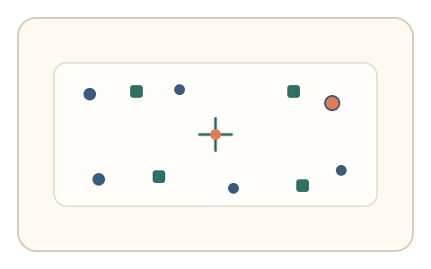
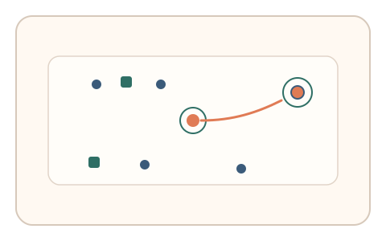
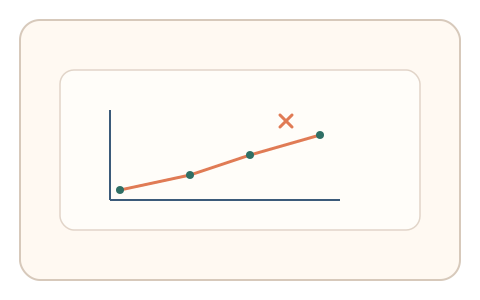

#24
视觉思考范式：空间/结构/直觉
已扩展
视觉拥挤焦点
要求用户保持中心注视并点击外围目标，以外围识别误差与反应分布验证真实性。
概念原文
要求用户按住中心点，同时快速点击外围出现的特定符号；系统记录外围识别的错误类型与反应分布。
利用人类外围视觉的先天限制与误差模式作为信号。
研究背景
外围视觉存在明显的拥挤效应，目标在密集背景下更容易被混淆或替代。人类在此任务中的错误类型与反应时分布具有可测的稳定模式，可用作行为验证信号。
核心机制
- 要求用户按住中心点以保持注视焦点。
- 外围随机出现目标符号与干扰符号。
- 记录点击位置、错误类型与反应时。
- 分析错误分布与离中心距离的关系。
用户流程
- 步骤 1：用户按住中心点开始任务。
- 步骤 2：外围目标出现，用户快速点击目标。
- 步骤 3：系统统计误差分布并判定。
判定信号
外围识别错误类型与分布
拥挤效应会产生稳定的替代或混淆错误模式。
反应时与离中心距离的关系
目标越偏外围通常反应越慢，形成可测曲线。
判定逻辑
综合错误类型分布与反应时曲线，要求符合人类外围视觉规律；误差过低且反应过快或完全随机判异常。
对抗面
- 脚本识别目标并直接点击
- 重放真实用户的点击序列
防御与缓解
- 随机化目标与干扰符号的密度与位置
- 加入微时序与鼠标轨迹信号进行多信号判定
- 多轮任务并对跨轮一致性进行评估
可达性与风险
提供放大与高对比模式，并允许替代任务（非外围识别），避免对低视力用户造成负担。
- 高密度布局增加认知负担
- 显示器尺寸差异影响外围距离参数
可视化状态

状态 1：中心注视
中心固定点与外围密集符号。

状态 2：外围点击
保持中心点同时点击外围目标。

状态 3：误差分布
分析误差类型与反应时曲线。
参考资料
Crowding (visual perception)
说明视觉拥挤效应与外围识别限制。
Peripheral vision
说明外围视觉的能力与局限。